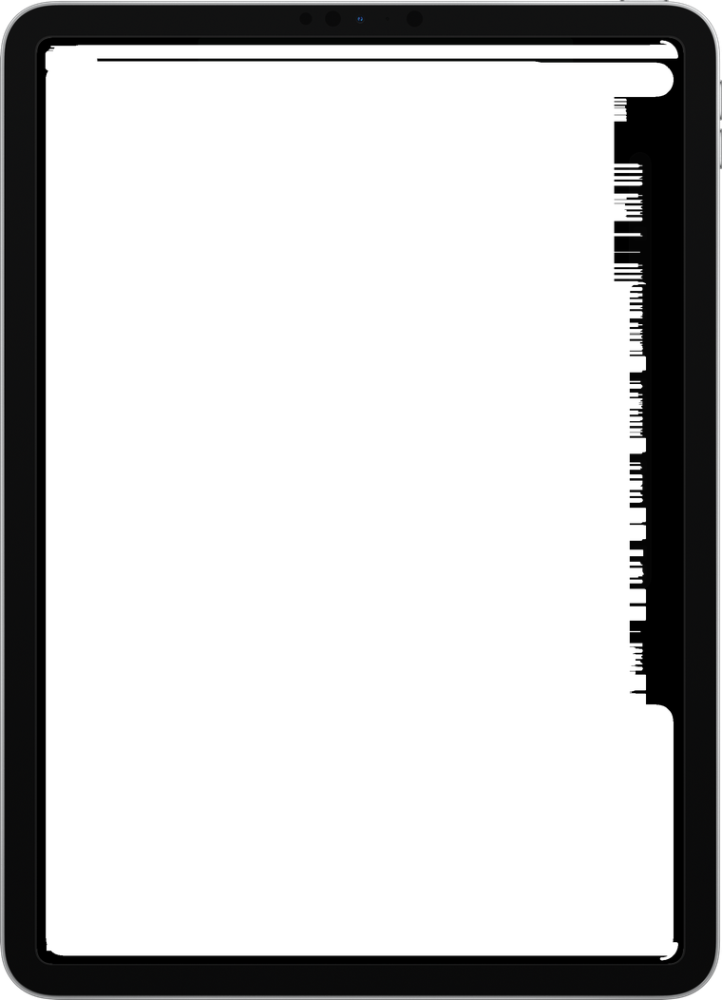

Make a bar chart race from Excel or Google Sheets
Your sheet is already most of the way there. Here is the layout, the export, and the traps that come with spreadsheet files.

Lay the sheet out wide
Put one row per competitor and one column per point in time. Row 1 is the headings; column A is the name. If your data is currently long — one row per name-and-year pair — a pivot table turns it into this shape in about thirty seconds.
Cumulative or not?
For the classic “piling up over time” race, make the figures running totals. In Excel or Sheets that is one formula dragged across: =SUM($B2:C2) for the cell under the second year, and so on.
Leave the blanks blank
Do not fill empty cells with zeros to tidy the sheet. A blank means “not in the race yet”; a zero means “in the race with nothing”, and the second one parks a bar on the baseline from the first frame.
Export as CSV
- Excel: File → Save As → CSV UTF-8 (Comma delimited). Pick the UTF-8 variant if it is offered — it is what keeps accented names intact.
- Google Sheets: File → Download → Comma-separated values (.csv).
- Numbers: File → Export To → CSV.
Only the active sheet is exported, so make sure the one you want is in front.
What the importer sorts out for you
Spreadsheet exports are messier than they look, and the reader is built for the real ones rather than the ideal ones. It copes with semicolons or tabs instead of commas (which is what Excel writes in much of Europe and Latin America), with 1.234,56 as well as 1,234.56, with currency symbols, with Windows line endings, and with the byte order mark Excel puts at the front of a UTF-8 file.
Check the read, not the file
View data shows the numbers as the chart will receive them and lists which of your columns became the name, the picture, the flag code and the group. A decimal comma misread as a thousands separator is invisible in the chart, where it just looks like a very good year.
Questions
Can I import an .xlsx file directly?
Not today - save or export it as CSV first. Every spreadsheet app does it in two clicks.
My accented names came out wrong. What happened?
The file was not saved as UTF-8. Re-export it choosing CSV UTF-8; the app warns you when it has had to fall back to Latin-1.
Make one from your own data
A native Mac app. Free to download, free to export at full resolution, one payment to remove the mark.
Download on the App Store